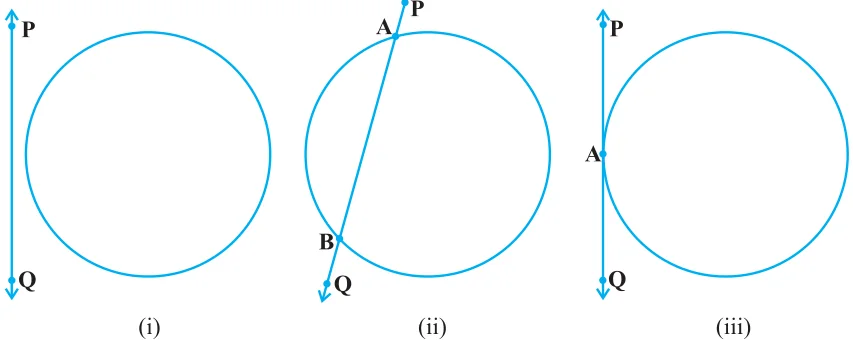
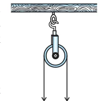

CIRCLES
You have studied in Class IX that a circle is a collection of all points in a plane which are at a constant distance (radius) from a fixed point (centre). You have also studied various terms related to a circle like chord, segment, sector, arc etc. Let us now examine the different situations that can arise when a circle and a line are given in a plane. So, let us consider a circle and a line PQ. There can be three possibilities given in Fig. 10.1 below:

In Fig. 10.1 (i), the line PQ and the circle have no common point. In this case, PQ is called a non-intersecting line with respect to the circle. In Fig. 10.1 (ii), there are two common points A and B that the line PQ and the circle have. In this case, we call the line PQ a secant of the circle. In Fig. 10.1 (iii), there is only one point A which is common to the line PQ and the circle. In this case, the line is called a tangent to the circle.

You might have seen a pulley fitted over a well which is used in taking out water from the well. Look at Fig. 10.2. Here the rope on both sides of the pulley, if considered as a ray, is like a tangent to the circle representing the pulley. Is there any position of the line with respect to the circle other than the types given above? You can see that there cannot be any other type of position of the line with respect to the circle. In this chapter, we will study about the existence of the tangents Fig. 10.2